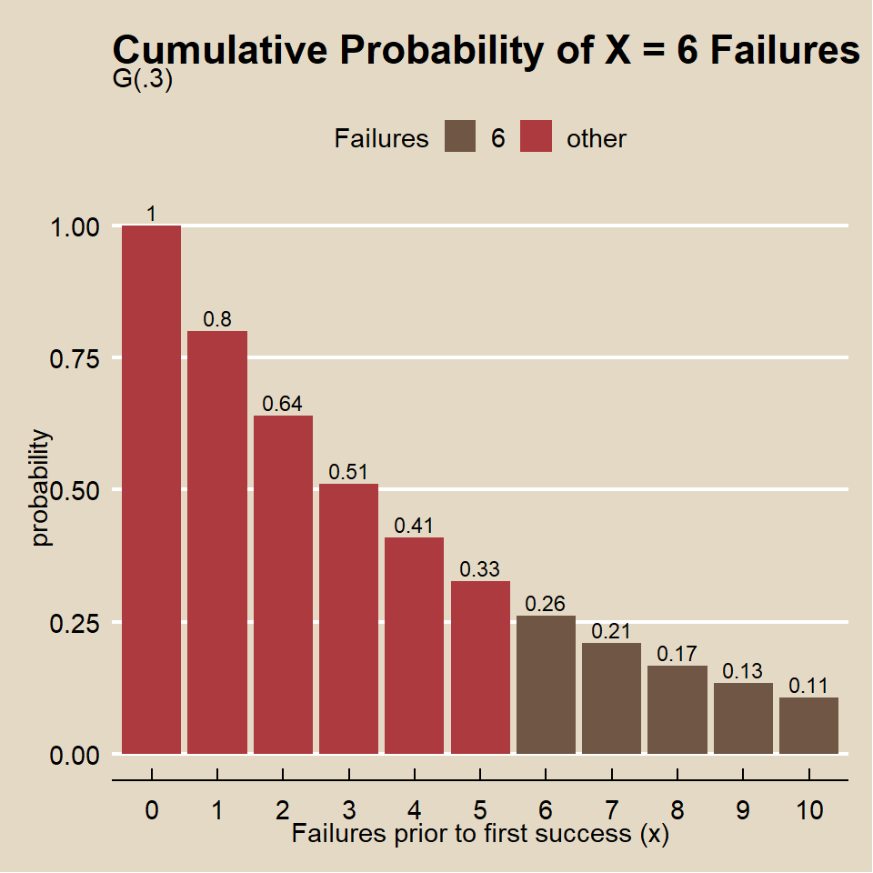
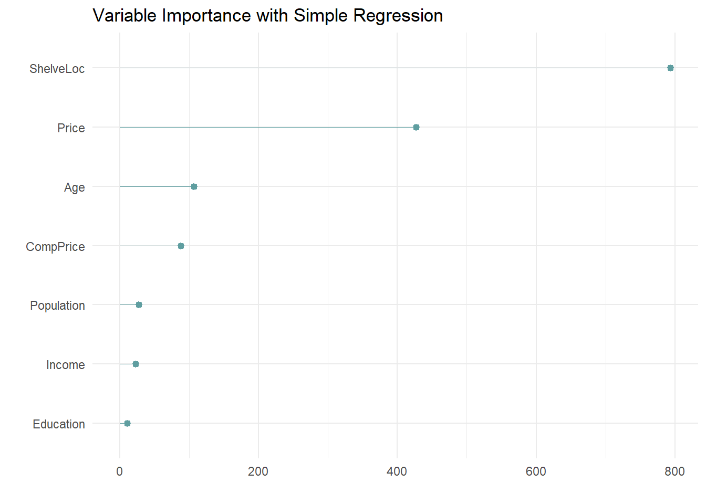

8.2 Regression Trees
A simple regression tree is built the same way as a simple classificatioon tree. Like the simple classification tree, it is rarely invoked on its own; the bagged, random forest, and gradient boosting methods build on this logic.
8.2.0.1 Example
Using the Carseats data set from ISLR, I’ll predict Sales using the available feature variables.
## # A tibble: 11 x 10
## type variable missing complete n n_unique top_counts ordered mean
## <chr> <chr> <chr> <chr> <chr> <chr> <chr> <chr> <chr>
## 1 fact~ ShelveL~ 0 400 400 3 Med: 219,~ FALSE <NA>
## 2 fact~ Urban 0 400 400 2 Yes: 282,~ FALSE <NA>
## 3 fact~ US 0 400 400 2 Yes: 258,~ FALSE <NA>
## 4 nume~ Adverti~ 0 400 400 <NA> <NA> <NA> " 6~
## 5 nume~ Age 0 400 400 <NA> <NA> <NA> " 53~
## 6 nume~ CompPri~ 0 400 400 <NA> <NA> <NA> 124.~
## 7 nume~ Educati~ 0 400 400 <NA> <NA> <NA> " 13~
## 8 nume~ Income 0 400 400 <NA> <NA> <NA> " 68~
## 9 nume~ Populat~ 0 400 400 <NA> <NA> <NA> 264.~
## 10 nume~ Price 0 400 400 <NA> <NA> <NA> "115~
## 11 nume~ Sales 0 400 400 <NA> <NA> <NA> " 7~
## # ... with 1 more variable: sd <chr>partition <- createDataPartition(y = carseats_dat$Sales, p = 0.8, list = FALSE)
carseats.train <- carseats_dat[partition, ]
carseats.test <- carseats_dat[-partition, ]
rm(partition)The first step is to build a full tree, then perform k-fold cross-validation to help select the optimal cost complexity (\(cp\)). The only difference here is the rpart() parameter method = "anova" to produce a regression tree.
set.seed(1234)
# Specify model = TRUE to handle plotting splits with factor variables.
carseats.full_anova <- rpart(formula = Sales ~ .,
data = carseats.train,
method = "anova",
xval = 10,
model = TRUE)
rpart.plot(carseats.full_anova, yesno = TRUE)
##
## Regression tree:
## rpart(formula = Sales ~ ., data = carseats.train, method = "anova",
## model = TRUE, xval = 10)
##
## Variables actually used in tree construction:
## [1] Advertising Age CompPrice Education Income Price
## [7] ShelveLoc
##
## Root node error: 2686.8/321 = 8.37
##
## n= 321
##
## CP nsplit rel error xerror xstd
## 1 0.267943 0 1.00000 1.00540 0.078263
## 2 0.088532 1 0.73206 0.74208 0.056780
## 3 0.065219 2 0.64353 0.71827 0.052070
## 4 0.042189 3 0.57831 0.68319 0.051263
## 5 0.025284 4 0.53612 0.66436 0.050684
## 6 0.025152 5 0.51083 0.64727 0.048558
## 7 0.021135 7 0.46053 0.64885 0.047632
## 8 0.020604 8 0.43939 0.63486 0.045827
## 9 0.018236 9 0.41879 0.63459 0.045611
## 10 0.017199 10 0.40055 0.64255 0.046307
## 11 0.013819 11 0.38335 0.65194 0.046275
## 12 0.012500 12 0.36953 0.63185 0.045019
## 13 0.012127 13 0.35703 0.62789 0.044142
## 14 0.011236 14 0.34491 0.62535 0.044194
## 15 0.010000 15 0.33367 0.62353 0.044238The algorithm included 9 variables in the full tree.
The second step is to prune the tree to avoid overfitting. The CP table shows the relavent statistics to choose the appropriate pruning paramter. The CP table is included in the model summary. The rel error column is the error rate / root node error produced when pruning the tree using complexity parameter CP to nsplits splits. The xerror column shows the error rate. A plot of xerror vs cp shows the relationship.

In this case, the smallest relative error is at 0.01, but the maximum CP below the dashed line (one standard deviation above the mimimum error) is at cp ~ .039.Use the prune() function to prune the tree by specifying the associated cost-complexity cp.

The pruned tree has 9 variables. The most important indicator of Sales is shelving location.
The third and last step is to make predictions on the validation data set and record the root mean squared error (RMSE) for comparison to other models. The root mean squared error (\(RMSE = \sqrt{(1/2) \sum{(actual - pred)^2}})\) and mean absolute error (\(MAE = (1/n) \sum{|actual - pred|}\)) are the two most common measures of predictive accuracy. The key difference is that RMSE punishes large errors more harshly. For a regression tree, set argument type = "vector" (or do not specify at all).
carseats.anova.pred <- predict(carseats.anova, carseats.test, type = "vector")
plot(carseats.test$Sales, carseats.anova.pred,
main = "Simple Regression: Predicted vs. Actual",
xlab = "Actual",
ylab = "Predicted")
abline(0, 1)
## [1] 2.207922The pruning process leads to an average prediction error of 2.208 in the test data set. Not too bad considering the standard deviation of Sales is 2.517.
All of this can happen more or less automatically with the caret::train() function, specifying method = "rpart" and specifying either tuneLength or tuneGrid.
I’ll do this with tuneLength first.
carseats.anova2 = train(Sales ~ .,
data = carseats.train,
method = "rpart", # for classification tree
tuneLength = 5, # choose up to 5 combinations of tuning parameters (cp)
metric = "RMSE", # evaluate hyperparamter combinations with RMSE
trControl = trainControl(
method = "cv", # k-fold cross validation
number = 10, # 10 folds
savePredictions = "final" # save predictions for the optimal tuning parameter
)
)## Warning in nominalTrainWorkflow(x = x, y = y, wts = weights, info =
## trainInfo, : There were missing values in resampled performance measures.## CART
##
## 321 samples
## 10 predictor
##
## No pre-processing
## Resampling: Cross-Validated (10 fold)
## Summary of sample sizes: 289, 289, 289, 288, 289, 289, ...
## Resampling results across tuning parameters:
##
## cp RMSE Rsquared MAE
## 0.02528421 2.260357 0.4063269 1.822658
## 0.04218949 2.310752 0.3743082 1.857423
## 0.06521890 2.402761 0.3207289 1.952247
## 0.08853191 2.441280 0.2983654 2.000816
## 0.26794258 2.764523 0.1927982 2.231786
##
## RMSE was used to select the optimal model using the smallest value.
## The final value used for the model was cp = 0.02528421.
carseats.anova.pred <- predict(carseats.anova2, carseats.test, type = "raw")
plot(carseats.test$Sales, carseats.anova.pred,
main = "Simple Regression: Predicted vs. Actual",
xlab = "Actual",
ylab = "Predicted")## [1] 2.207922## Warning in rm(oj.class.pred): object 'oj.class.pred' not foundNow with tuneGrid.
myGrid <- expand.grid(cp = (0:2)/10)
carseats.anova3 = train(Sales ~ .,
data = carseats.train,
method = "rpart", # for classification tree
tuneGrid = myGrid, # choose up to 5 combinations of tuning parameters (cp)
metric = "RMSE", # evaluate hyperparamter combinations with RMSE
trControl = trainControl(
method = "cv", # k-fold cross validation
number = 10, # 10 folds
savePredictions = "final" # save predictions for the optimal tuning parameter
)
)
carseats.anova3## CART
##
## 321 samples
## 10 predictor
##
## No pre-processing
## Resampling: Cross-Validated (10 fold)
## Summary of sample sizes: 289, 289, 288, 289, 289, 289, ...
## Resampling results across tuning parameters:
##
## cp RMSE Rsquared MAE
## 0.0 2.153490 0.4843833 1.74153
## 0.1 2.484369 0.2889212 2.03803
## 0.2 2.476571 0.2892989 2.03017
##
## RMSE was used to select the optimal model using the smallest value.
## The final value used for the model was cp = 0.
carseats.anova.pred <- predict(carseats.anova3, carseats.test, type = "raw")
plot(carseats.test$Sales, carseats.anova.pred,
main = "Simple Regression: Predicted vs. Actual",
xlab = "Actual",
ylab = "Predicted")## [1] 1.664759Looks like the manual effort faired best again. Here is a summary the RMSE values of the three models.
rbind(data.frame(model = "Manual ANOVA",
RMSE = round(carseats.anova.rmse, 5)),
data.frame(model = "Caret w/tuneLength",
RMSE = round(carseats.anova.rmse2, 5)),
data.frame(model = "Caret w.tuneGrid",
RMSE = round(carseats.anova.rmse3, 5))
)## model RMSE
## 1 Manual ANOVA 2.20792
## 2 Caret w/tuneLength 2.20792
## 3 Caret w.tuneGrid 1.66476